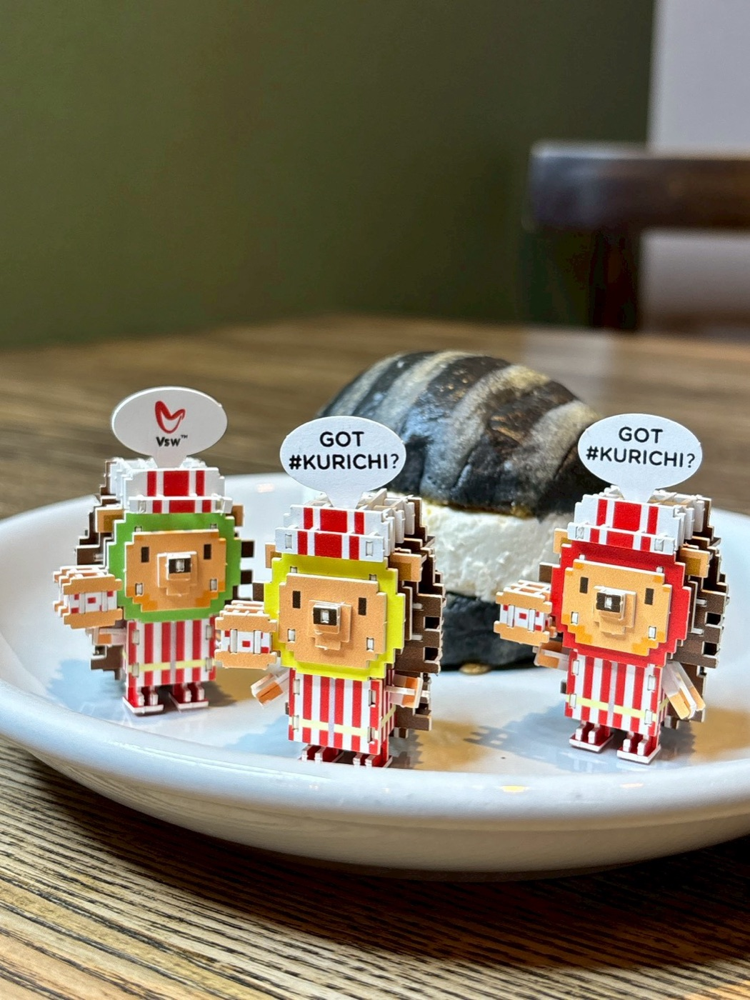
2026.04.23
CULTURE
🧸 何も喋らないのに、なんだか癒される。@harichi_kurichiland の世界が、じわじわくる。
→
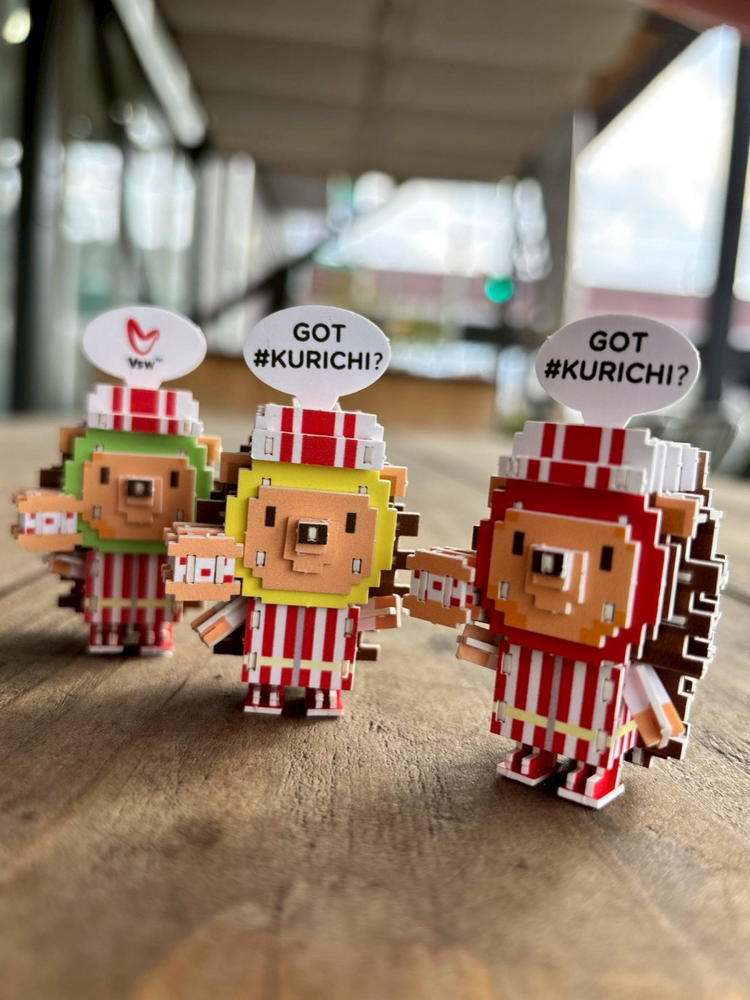
2026.04.22
PRODUCT
🎉 ハリチくん組み立て玩具『#HARICHI』ついに発売！ shi-gu-mi＋ × #クリチ
→
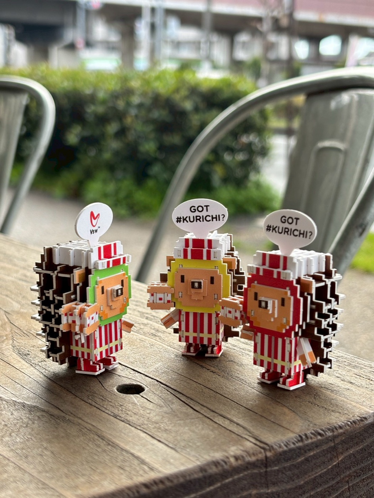
2026.04.13
EVENT
🎤 ガラフェス 2026 in 五反田に #クリチ 出店！國見クリチ参戦＆手押し相撲優勝副賞にハリチくん進呈
→
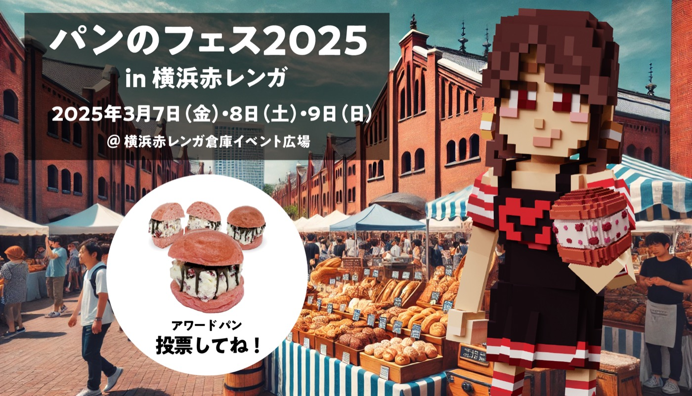
2026.03.13
EVENT
横浜パンフェスで話題の #クリチ が「てくてくパンまつり」神戸に登場
→
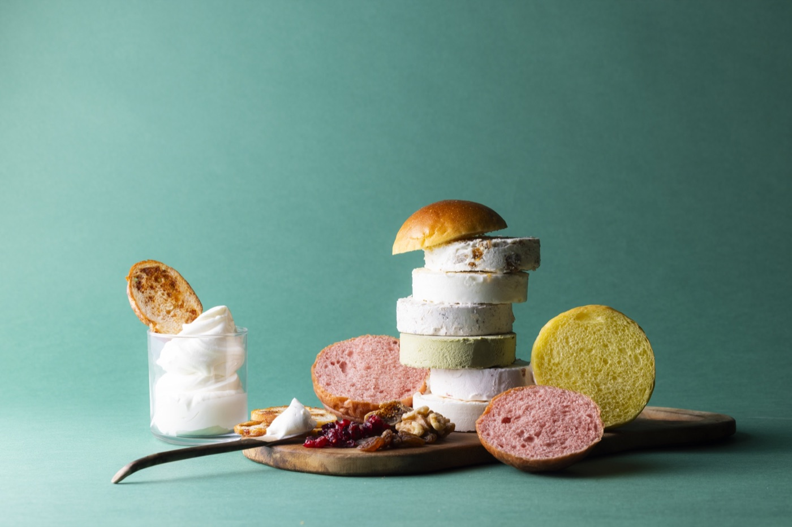
2026.03.09
AWARD
🥈 パンのフェス2026 シルバーアワード受賞！NY#クリチ、ブロンズ→シルバーへ。
→
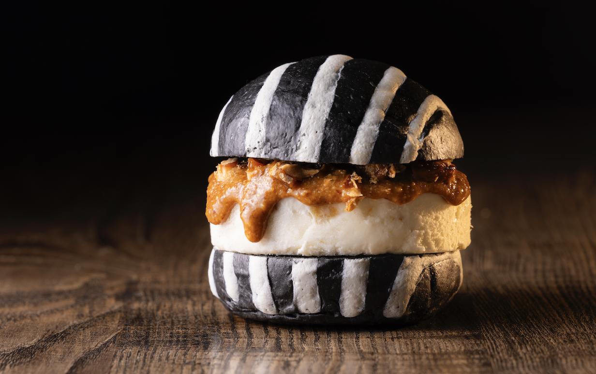
2026.03.06
EVENT
【パンのフェス2026】横浜赤レンガに出店決定！🍞✨
→
2025.09.12
EVENT
Vsw #クリチ、全国各地のパンフェスに続々出店
→
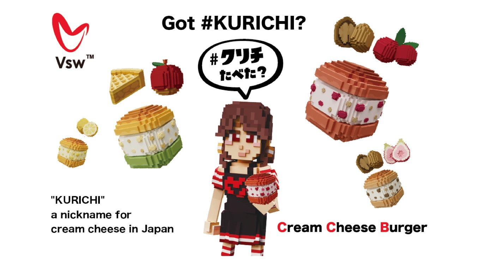
2025.07.07
COMPANY
國見きらら、Vsw株式会社に正式加入
→
2025.05.19
COMPANY
中国における「#クリチ」販売に向け 株式会社トーシンと戦略的パートナーシップを締結
→
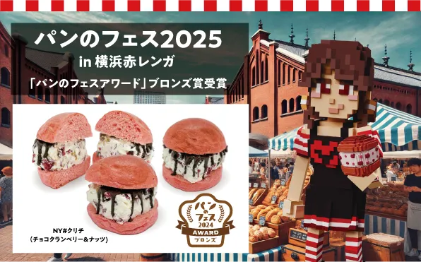
2025.03.10
AWARD
パンのフェス2025 ブロンズアワード受賞、NY#クリチ2000個完売御礼🎉
→
2025.02.27
COMPANY
Vsw株式会社、経営体制強化のため新たに代表取締役を2名迎え入れ
→
2025.02.21
EVENT
【パンのフェス2025】横浜赤レンガに出店決定！🍞✨
→
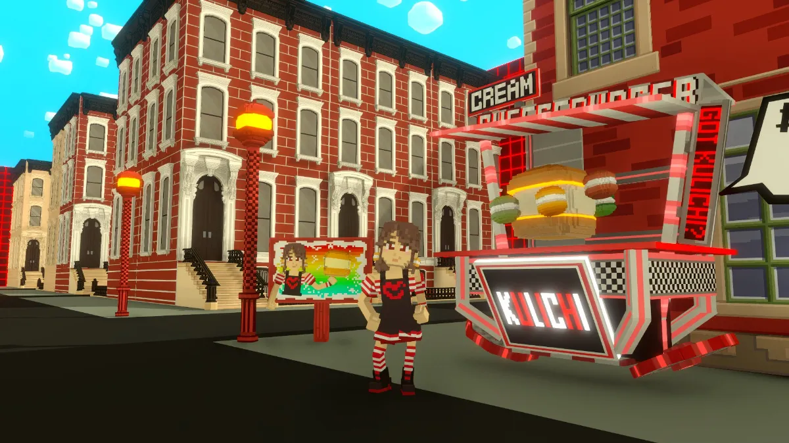
2025.01.23
METAVERSE
クリチランド制作プロジェクト！如月工房が語るThe Sandboxの魅力と挑戦✨
→
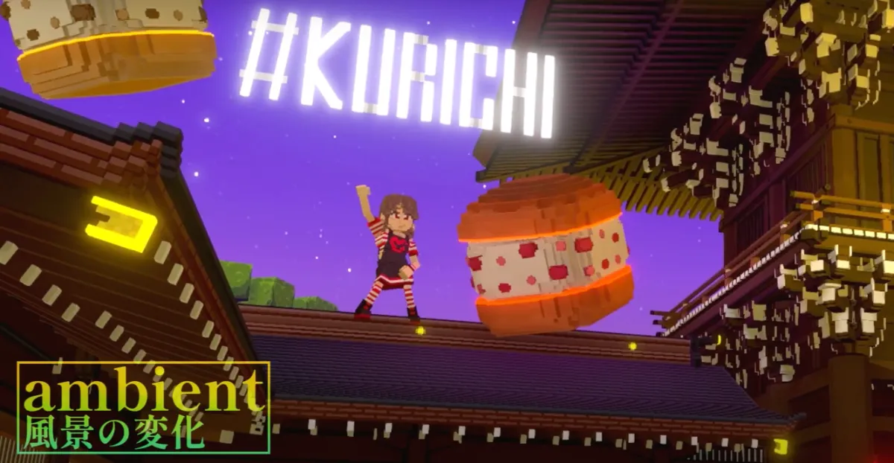
2025.01.23
METAVERSE
GAME JAM 参戦🎮 明治神宮のメタバース再現に込めた情熱🔥
→
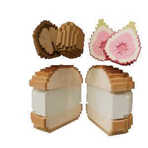
2025.01.15
METAVERSE
The Sandboxで広がる「#クリチ」の可能性✨
→

2024.12.04
MERCH
🗽 GOT #KURICHI? NEW YORK CITY Tシャツ販売スタート！
→